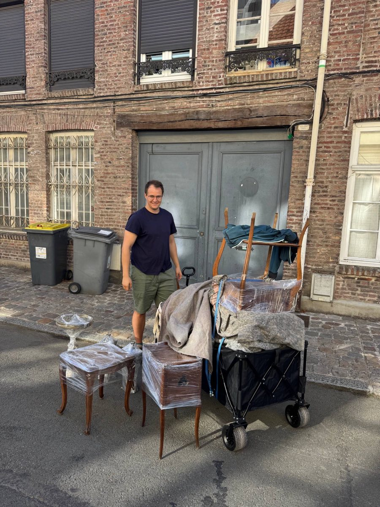
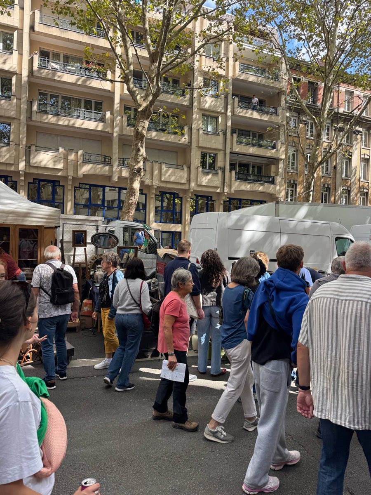
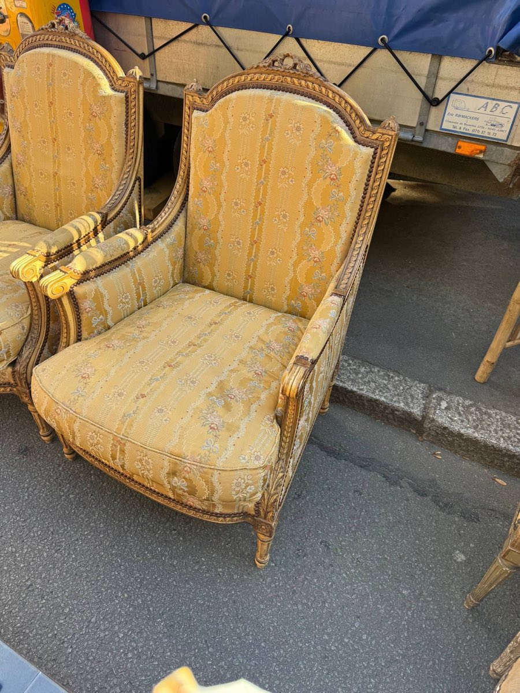
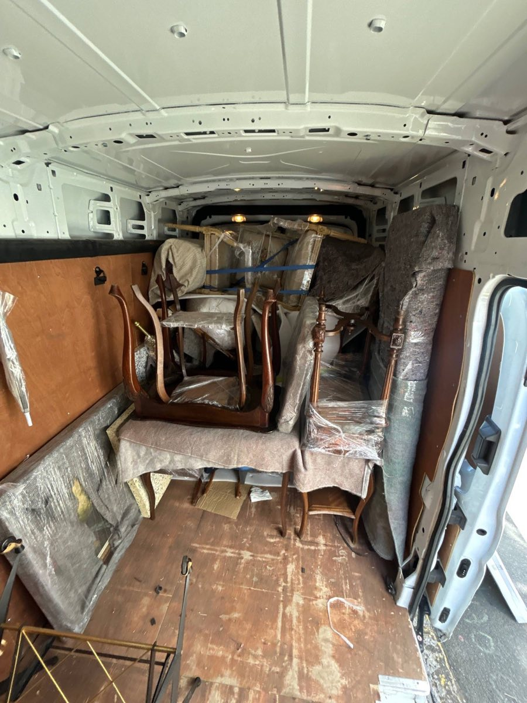
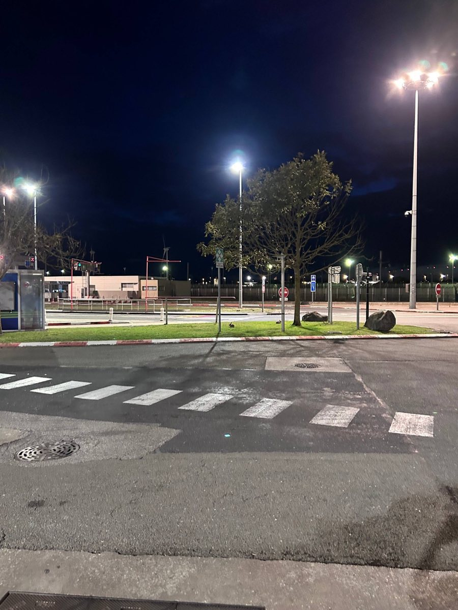

Last updated: 8 September 2026
Buying Furniture at the Braderie de Lille: A UK Reseller’s Trip
Back in April, we said we’d go back and find an actual French flea market — not just vintage shops. This past weekend we did: the Braderie de Lille, which the city itself calls the largest flea market in Europe. Around 2–2.5 million visitors, 10,000 vendors, 100 km of stalls, over one 34-hour non-stop weekend at the start of September.
We’d researched this months ago while planning which French markets to hit next, and our own notes on Lille said, in plain words: not furniture-friendly. Too many people, too dense, bring a wheeled trolley, small things only.
We brought our own van anyway.

We knew it would be big. We didn’t know what that meant on foot
The numbers on paper are one thing. Walking them is another. Dealers travel in from well outside Lille for this — we parked next to a rental van from Jumet, near Charleroi in Belgium. There’s a Poste de Secours banner strung over the street, proper event barricades, local media signage — this is closer to a small city shutting down for a weekend than a village vide-grenier.
Some stalls were two kilometres each way from where the van was parked — four kilometres round trip, on foot, pushing a loaded wagon, for one item. We did that walk more than once. It thins out early morning and again late evening; if moving anything bulky is on your list, those are the windows, not the middle of the day.

What we actually bought
Chairs, mostly — a pair of gilt Louis XVI-style bergère armchairs in yellow floral silk, cream-painted dining chairs with red corduroy upholstery, black cane-seat bentwood chairs, a stack of cantilever chairs with chrome legs. A tall marquetry chest of drawers. A pair of marble-top nightstands. A round brass occasional table with a pierced gallery rim. Two pairs of ornate brass candelabra. A hand-painted four-panel folding screen with a horse-and-carriage scene. A gilt-framed oil painting of a fruit still life, one corner chipped.
None of that is a small-antiques haul. That’s furniture, out of a market our own research told us to treat as small-antiques-only.
What we didn’t buy but couldn’t stop photographing: a stained-glass panel of Saint Hubert kneeling before a stag, tagged at €100; a dealer’s whole tarpaulin of genuine vintage French street-name enamel signs; two pairs of antique metal roller skates. That’s the range of the place — you can walk past all of that between one furniture stall and the next. A few more of both, below.

More from the day — some of what we bought, some we just liked looking at (marked “Not bought” where it wasn’t). Click any photo to see it full size.
How you actually move furniture through 100 km of stalls
A folding wagon and a lot of ratchet straps. Load it in layers — pack blankets and foam between each level — strap it down, and you can stack a genuinely large haul on a trolley that would otherwise hold two chairs.
- Take the bigger trolley — if you can justify the extra space for a folding stool or table too, it buys you 3–4 fewer kilometres of walking over a full day
- Get a trolley with a long handle — one that doesn’t clip your shins on cobblestones
- Wear gloves — a full day of pushing a loaded wagon will blister your palms before lunch, straps or no straps
- Bargain boxes sit next to museum-grade stalls — hand-written “10€ chaque pièce” signs two stalls down from a dealer with proper tapestries. You need both a plan and a willingness to abandon it
- Split the job — Valentina walked the stalls and picked, sending a location pin and a photo for each find; I collected it on the trolley, hauled it to the van, and packed it in. Neither of those jobs works well solo at this scale

Getting there was the easy part
Outbound, we booked what the confirmation called Le Shuttle Fragil — cheaper than the standard fare for our vehicle and dates. It’s a day-slot booking rather than a fixed departure time: you turn up and take whatever crossing comes up during the day, not the fixed slot you’d get on a normal passenger booking.
When we went to load, a staff member told us we needed a printed form declaring we were travelling empty — without it, we wouldn’t be let through at all. He printed it for us on the spot, though he said afterwards it really should have been done in advance, before we arrived.
The passport control booths at the terminal are built for van and lorry height, which made things awkward in our own car — we had to get out and reach up to the window at every stop.
On the French side, we got waved off to customs because the booking had flagged us as “loaded” when we were actually travelling out empty. We were sent to bay B1, a staff member came out, we showed him the packing blankets and foam we’d brought along and explained we were going to buy furniture — he waved us through in a couple of minutes.
Parking: look for the green line on the machine
We usually park at the Auchan next to our hotel in Lille and eat there before heading in. This time the car park turned out to have a 2.1 metre height limit — fine for a car, not for the van. We ended up asking at the Norauto store right next door; they let us park for a couple of hours, no issue.
Near the market, it’s the payment machine you need to check, not the road markings. We spent half of Friday afternoon hunting for a legal spot near the market and found nothing. Saturday morning we finally understood why: pay-and-display machines with a green line on them are free on weekends, no payment needed at all. Ten minutes’ walk from the market we found a legal spot for the van next to one. There are also machines with a blue line nearby with different (unclear to us) rules — check the machine before you park, not the paint on the ground.
By 6am, legal parking mostly stops being a real constraint on people’s behaviour — cars start going up on kerbs and half onto pedestrian crossings. We counted maybe 10–15 genuine car spaces on the drive in from our out-of-town hotel. Get there early, or accept you’re walking further than planned.
Coming back: the GMR wasn’t enough this time
Last time, the standard passenger customs process was straightforward. An EORI number, a simplified declaration filled in online from a McDonald’s Wi-Fi, category totals, done. This time, coming back with a van full of furniture rather than a car with shopping bags, we were routed into the freight lane — the one built for lorries, not private vehicles.
Worth saying up front: we’d book Eurotunnel Freight again anyway. It’s a same-day slot rather than a fixed time, noticeably cheaper than the passenger fare, and honestly a lot less stressful to book than we expected. The paperwork below is the trade-off — not a reason to avoid the freight booking itself.
That's not a loophole, it’s the actual rule. A “passenger vehicle” for Eurotunnel purposes is defined as one not used or intended for carrying commercial goods. Bring back a van of stock to resell, and you’ve stepped outside that definition, however small your operation actually is. Practically, that meant two things where the first trip only needed one:
- A Goods Movement Reference (GMR) — a reference number that ties your shipment to your vehicle at the border, generated through GVMS (the Goods Vehicle Movement Service most UK ports now use, including Eurotunnel)
- A Movement Reference Number (MRN) — the actual customs declaration behind that GMR, identifying exactly what you’re moving and under what customs procedure
We’d done the GMR side — the same simplified EORI-based declaration that worked fine on the passenger side last time. The officer wanted the MRN as well: a full export declaration we hadn’t filed, because nothing in the passenger-side process had ever asked for one. It cost us about half an hour at the checkpoint. Traffic was light — four or five lorries total — and after a search (flashlights, no actual unloading) we were through.
Here’s the part that worked exactly like last time: having every item already logged in FlipperHelper, in euros, with the exchange rate handled automatically, made the value side of the declaration trivial. We weren’t reconstructing forty stall purchases from memory at a checkpoint at night — we read off category totals we’d already tracked. Useful as hell. It just wasn’t the whole story this time. If you’re bringing back more than a car full of shopping — a van, or anything that could plausibly read as commercial — budget for the MRN conversation too, not just the EORI one.
The rabbits
Small thing, but it’s staying in this post: the Eurotunnel Le Shuttle car park has rabbits in it at night. Not one or two — we counted around ten, quietly grazing on the grass verge under the floodlights while we waited to board. Nobody warns you about this. Somebody should.

Why this trip is changing Hauls
Two things about this trip turned into actual product work, not just a story.
Currency handling at the trip level, not just the item level. Every purchase this weekend was in euros, spread across two days and dozens of stalls, and totalling it by hand at customs is exactly what FlipperHelper was built to avoid. We’re extending currency and exchange-rate handling to work properly across a whole Haul, not just per item, so a multi-day, multi-currency buying trip totals itself correctly without extra steps.
Adding items to a Haul after you’ve already created it. Right now the natural flow assumes you log a haul’s items in one go. On a trip like this — more finds than we expected when we started the wagon — that assumption breaks. We’re shipping the ability to keep adding items to a Haul you already started, so you’re not stuck logging everything up front or creating a new Haul every time you find one more thing.
Both came directly out of standing at a market stall this past weekend, not a roadmap meeting.
Was it worth it?
We came home with a van full of furniture from a market our own prior research told us to skip for exactly that kind of buying. All in — the stock itself, Eurotunnel, fuel, the extra customs paperwork — this trip cost somewhere around £2,500–3,000. We haven’t listed a single piece yet, so we’re not going to pretend we know the margin.
What we do know: the customs process was slower and more paperwork-heavy than our first trip, and if you’re taking a van rather than a car, go in expecting the freight-lane conversation, not just the passenger one.
We’ll go back for the next one. Next time, we’re filing the MRN before we leave.
Frequently asked questions
Can you buy furniture at the Braderie de Lille?
Yes, though it’s genuinely difficult — the event is usually treated as better suited to small antiques and vintage clothing because of the crowds (2 to 2.5 million visitors over the weekend, roughly 10,000 vendors, around 100 km of stalls). It’s possible with a folding trolley, ratchet straps to stack items in layers, and a van, but plan on long walks between stalls and the van, and go early morning or late evening when it’s less crowded.
What is a GMR (Goods Movement Reference)?
A GMR is a reference number generated through GVMS (the Goods Vehicle Movement Service used at UK ports including Eurotunnel) that ties a shipment’s customs declarations to a specific vehicle. Most major UK ports now require a valid GMR before a goods vehicle can cross.
Do I need an MRN to bring goods back from France through Eurotunnel?
If you’re travelling in a private car with a car-load of shopping, the standard simplified customs declaration (using your EORI number) is usually enough. If you’re bringing back goods for resale in a van, you may be routed through the freight lane, which can require a full MRN (Movement Reference Number) — the actual customs declaration behind your GMR — in addition to the simplified process. Check your booking and vehicle type before you travel.
When is the Braderie de Lille 2026?
Saturday 5 to Sunday 6 September 2026, roughly 34 hours non-stop. Free entry, around 2 to 2.5 million visitors and roughly 10,000 vendors, confirmed by the Ville de Lille.
Related reading
- Sourcing Reselling Stock from France: UK Guide to Driving, Customs & Costs — the first trip, the one that ended with “next time we want to find an actual brocante”
- Best French Brocantes 2026: UK Reseller Sourcing Calendar — the verified mega-events, including the Braderie de Lille dates and scale
- What Is a Brocante? UK Reseller’s Guide to French Flea Market Types
- Track Sourcing Trip Profit — work out whether each trip was actually worth it
- Vintage Market Reselling Guide
Track your sourcing trips with FlipperHelper
Free app for iOS and Android with multi-currency support and automatic exchange rates. Log purchases in EUR, track Eurotunnel and fuel as transport expenses, and see your real profit per trip. Works offline — perfect for markets with no signal.
Download Free on the App StoreGet it Free on Google Play